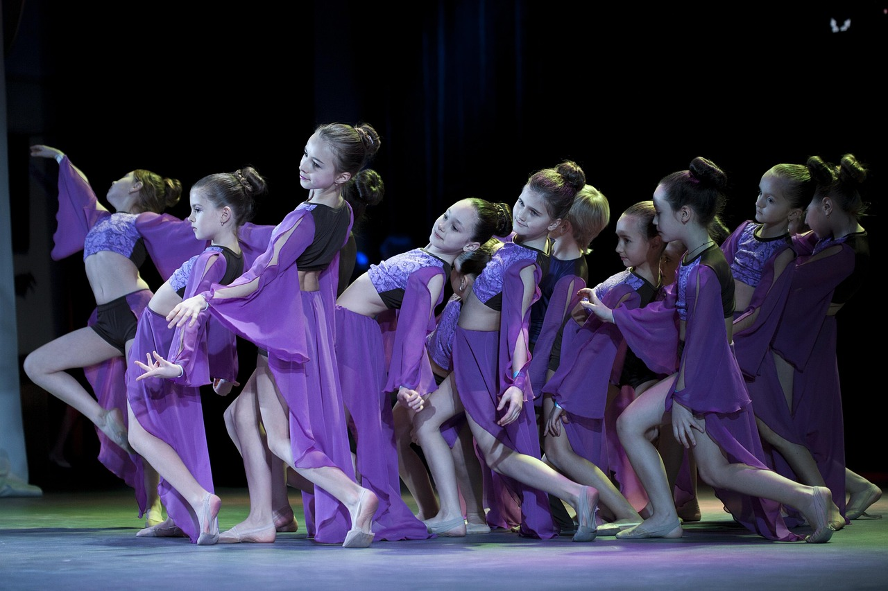
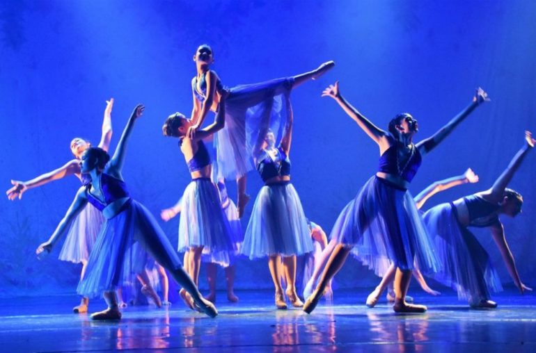
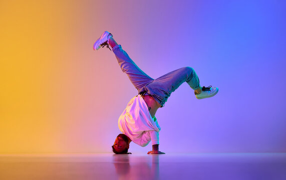

Qual estilo de dança combina mais com seu jeito de ser?
A dança é uma ótima maneira de manter suas atividades físicas em dia e cada modalidade pode trazer vários benefícios.
Veja abaixo alguns estilos de dança para você, que está interessado em começar algo novo mas não sabe por onde.
Jazz
O jazz é uma modalidade de dança que combina movimentos rítmicos com elementos de ballet, Hip Hop e outras danças.
Promove a melhora da flexibilidade, postura e coordenação motora. Além de fortalecer os músculos e melhorar o condicionamento cardiorrespiratório.
A música Jazz pode reduzir o estresse, induzir um sono melhor e estimular o raciocínio.
Se você quer dançar com atitude, se jogar na música com ritmo e muita energia, o jazz é a combinação perfeita de arte e movimento para relaxar o seu dia!
Ballet
O Ballet é uma dança clássica que exige graça e precisão, têm passos e gestos formalizados em padrões complexos.
Melhora a memória, o humor e auxilia no processo de socialização.
Essa modalidade resulta em um corpo com os músculos alongados, a postura elegante e um equilíbrio de muita força e leveza ao mesmo tempo.
O ballet adulto também está rompendo as barreiras do preconceito pois quando pensam nessa modalidade acham que é apenas para jovens, mas lembre-se que nunca é tarde para começar!
Se você procura foco em leveza, disciplina e quer transformar o corpo com elegância, o ballet é a escolha perfeita para você!
Hip Hop
O Hip Hop,também bastante conhecido como Dança de Rua, é uma modalidade de dança que exige movimentos soltos e variados.
É um estilo de dança que muitas vezes foi criticado por ser acusado de promover violência, misoginia e abuso de substâncias, porém depois de um tempo, mais e mais pessoas começam a elogiar este ritmo por seus benefícios terapêuticos.
Esse estilo de dança ajuda a reduzir a ansiedade e a depressão, melhora a comunicação e a expressão emocional.
Se você quer se expressar com liberdade, se divertir e cuidar da saúde mental, o Hip Hop é a dança certa para você!
Zumba

A Zumba é um exercício aeróbico completo, ela fortalece o coração e melhora a circulação sanguínea.
Ajuda também a controlar a pressão arterial, ela aumenta a resistência do sistema cardiovascular, deixando você mais preparado para atividades do dia a dia e proporcionando mais energia.
Além no convívio social,no decorrer das batidas, você consegue fazer uma grande queima de calorias se divertindo.
Com passos difíceis, música animada e bastante energia, a Zumba é super para aqueles que querem se exercitar sorrindo e se sentir vivo e livre a cada batida!